01 / 06
Cam2Cam
Direct video calls and group sessions, with the host in control.
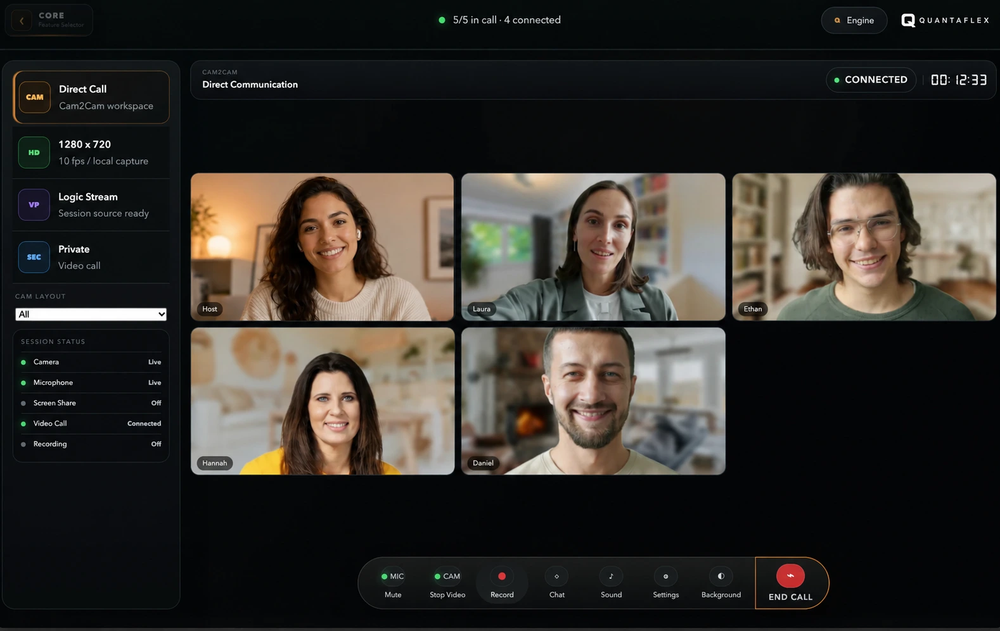
Product / 01
Own the platform
you share from.
One local-first desktop app for the essential parts of a media workflow: teaching, video calls, social video, playback, inspection and encoding. Conceived, designed and brought to market end to end: product, interface, brand identity, advertising, website and shop.
ONE PLATFORM · SIX WORKFLOWS
The Quantaflex cube
extends page visit times
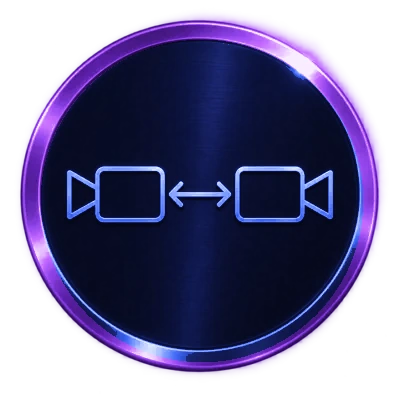
CAM2CAMPRIVATE CALLS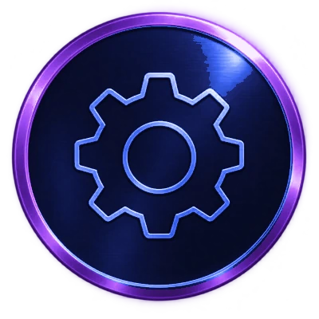
ENCODERMEDIA OUTPUTAdvertising & creative
Launch headers and campaign artwork: The brand highlight colours, the brushed metal and moody sunsets are carried across the website and workflows as a continuum.
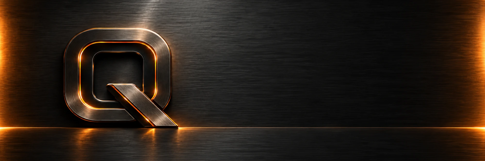
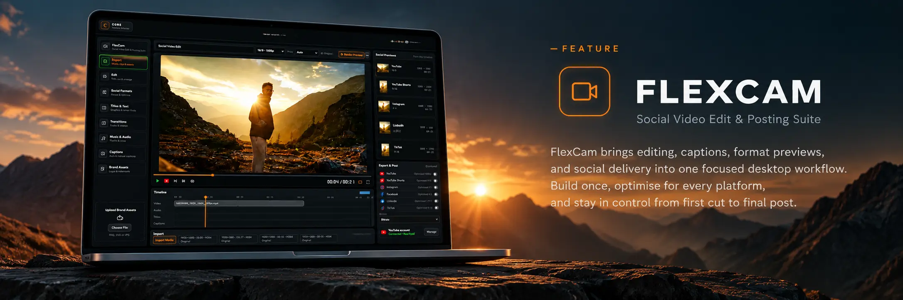
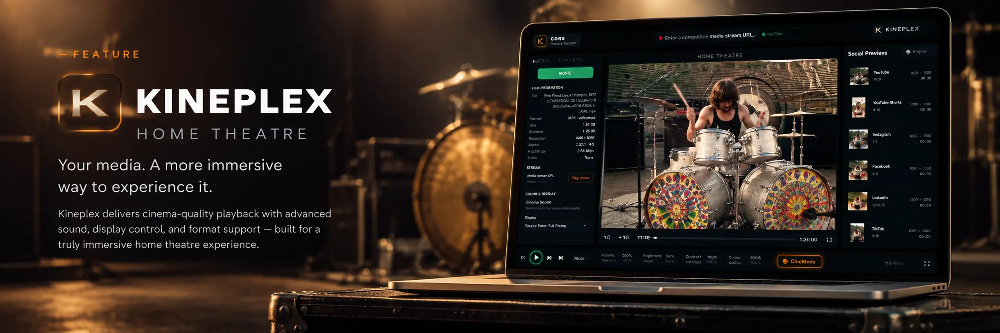
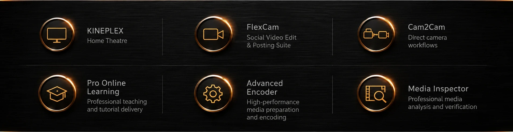
Interface
Real screens from the shipping app. Every workflow shares one calm, dark interface.
01 / 06
Direct video calls and group sessions, with the host in control.

02 / 06
Teach live with up to six learners. Check cameras and microphones in the Green Room, then bring learners on stage and share a PowerPoint, PDF or screen.
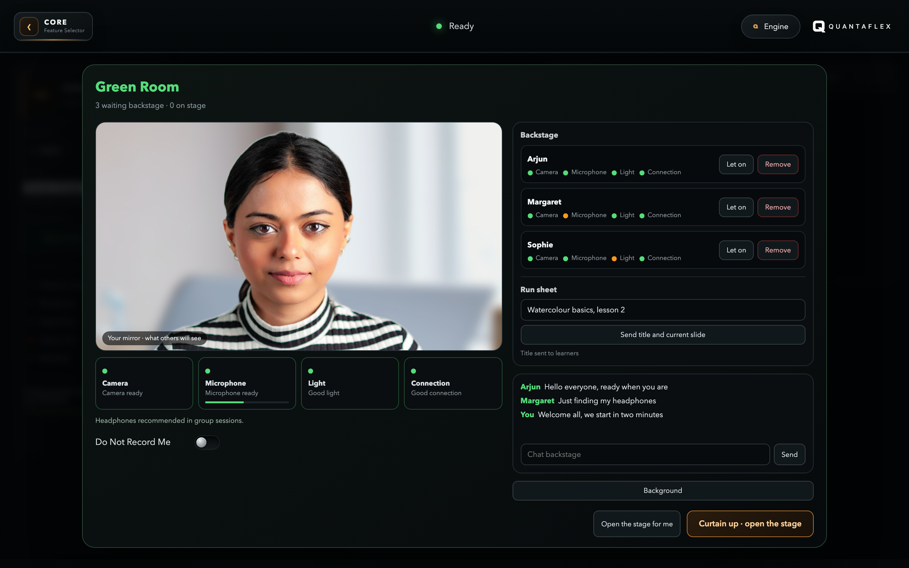
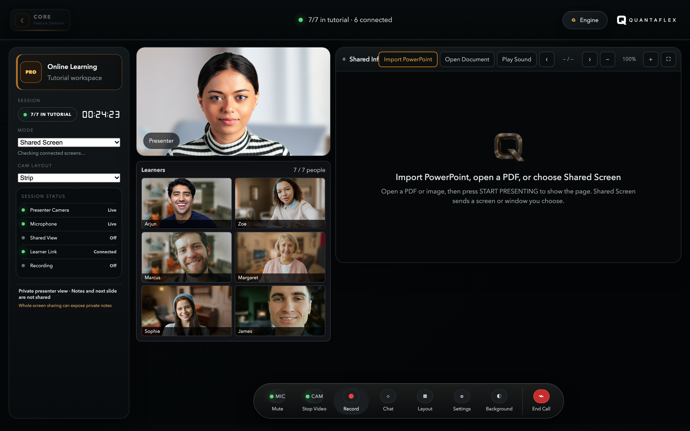
03 / 06
Set the call type, date and duration, then add your guests and their time zone. Send the prepared invitation from your own email account. Guests see their local time first.
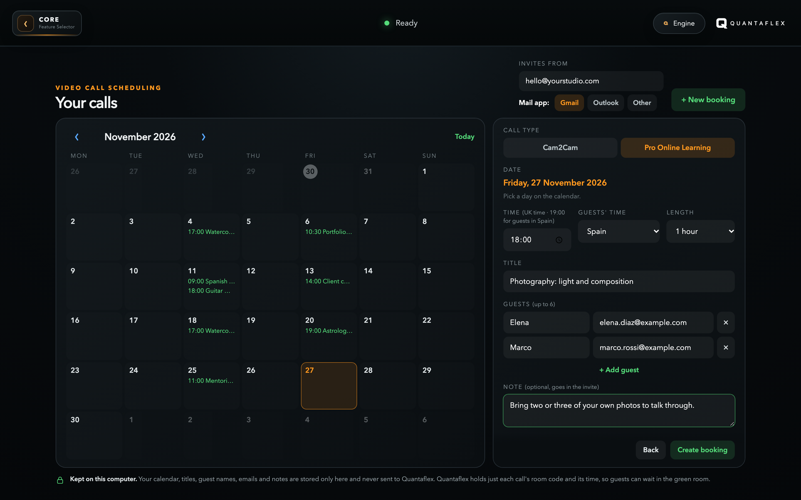
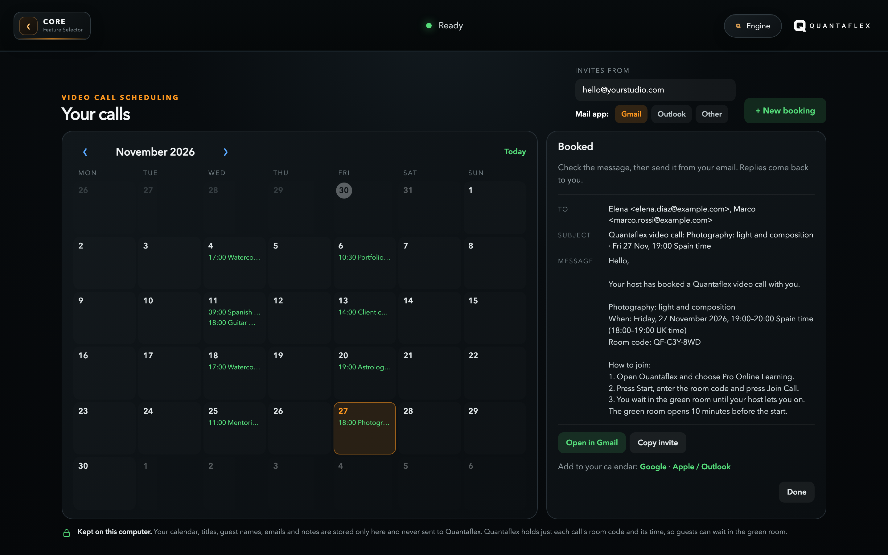
04 / 06
Edit, caption and format one social video for every platform.
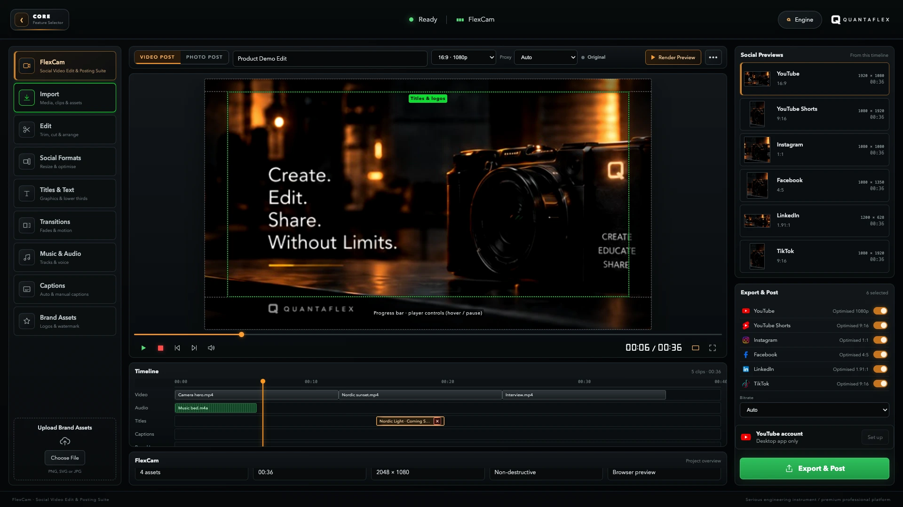
05 / 06
Home-theatre playback with cinema-style modes and adaptive ratio.
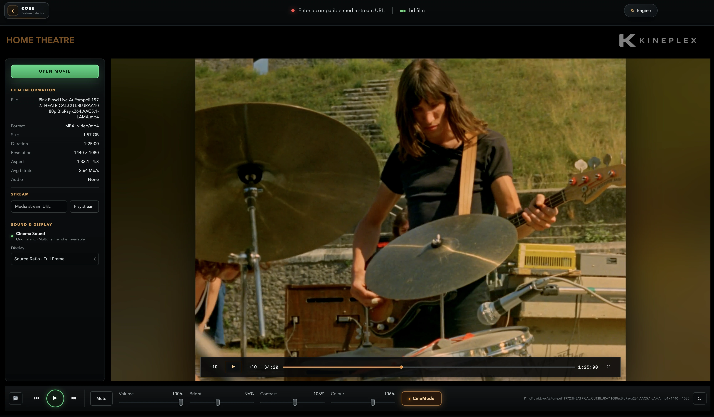
06 / 06
Professional encoding with full control over codec, quality and output.
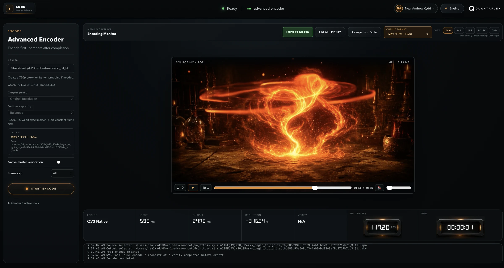
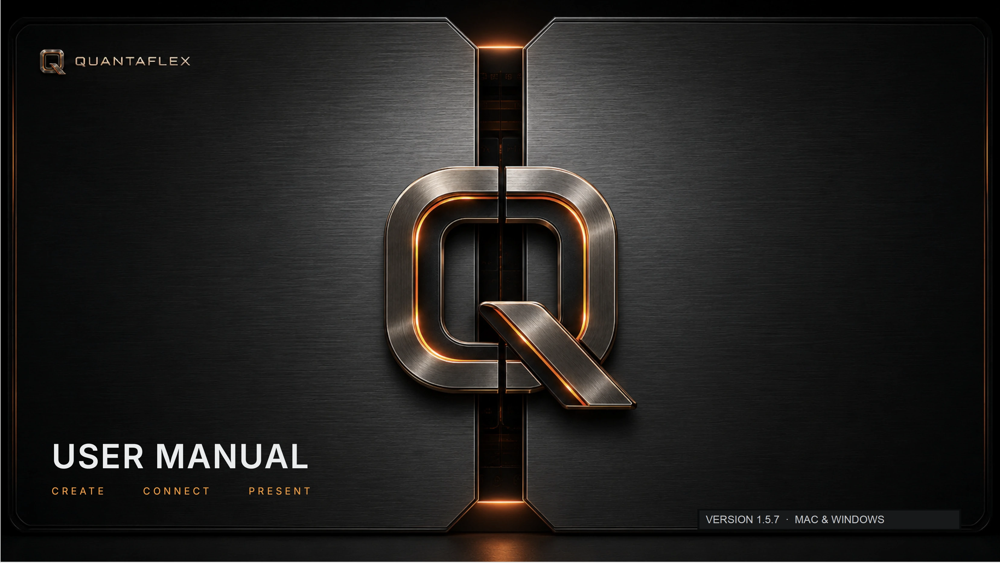
Download
The complete guide to Quantaflex: setup, every workflow and every control, written and designed alongside the app.